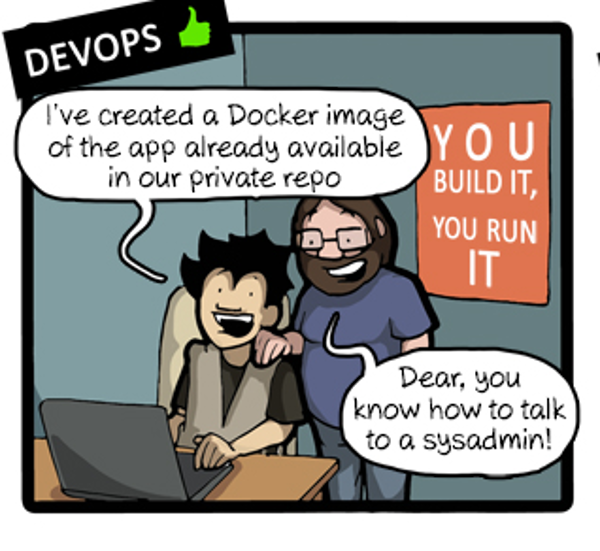
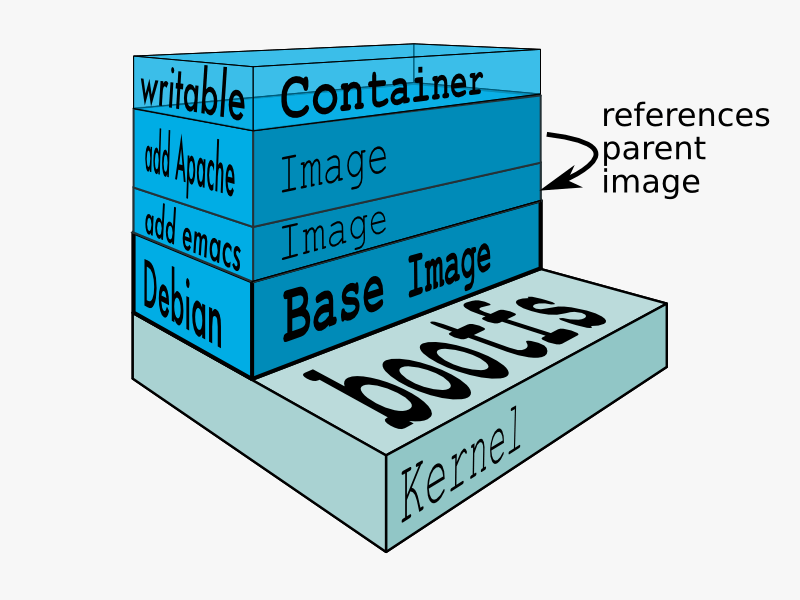
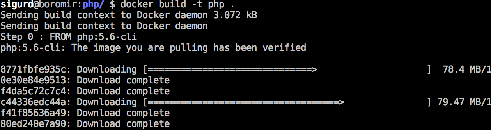
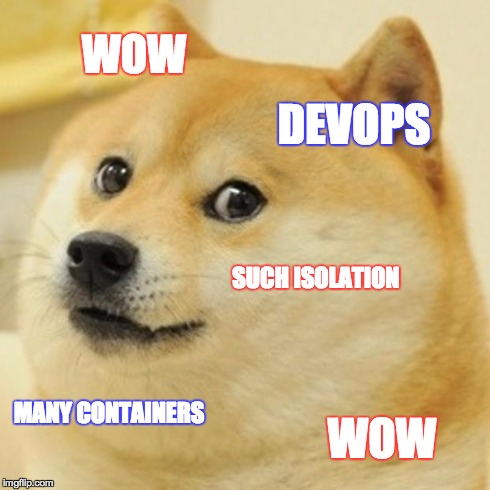

Utviklingsmiljøer
docker og fig
Sigurd Fosseng, Sopra Steria
"Tradisjonelt"
Slik installerer ..
- mongodb
- mysql
- python
- node + grunt + bower +++
- django
- jdk 8
osv..
I alle OS
- Windows
- Linux
- OS X
Dying Wiki
Prod?
Løsninger
Vagrant, VM, installasjons-script
.
eller fig, som bruker docker.


Hva
- Lettvekts virtualisering
- enkel deploy til alle systemer som kjører Docker
- shipping-container for ditt program.
- pack, ship, run programmet i isolert miljø, enkelt.
Hva
- skrevet i golang
- Kjernestøtte i linux
- virtualiserings overhead er veldig lavt. (0 kost vs native prosess)
- isolert miljø

FROM php:5.6-cli
COPY . /usr/src/myapp
WORKDIR /usr/src/myapp
CMD [ "php", "./your-script.php" ]
/Dockerfile

Kjapp demo
Fig
forenkler docker
- et verktøy for å håndtere docker
- kan kjøre opp flere containere
- lenke containere sammen
- defineres i en
fig.ymlfil
demotime
limits
- fungerer ikke optimalt på windows
- snart utdatert (blir en del av docker)

ikke helt devops
- bare første steg på en lang stige opp til devops-himmelen